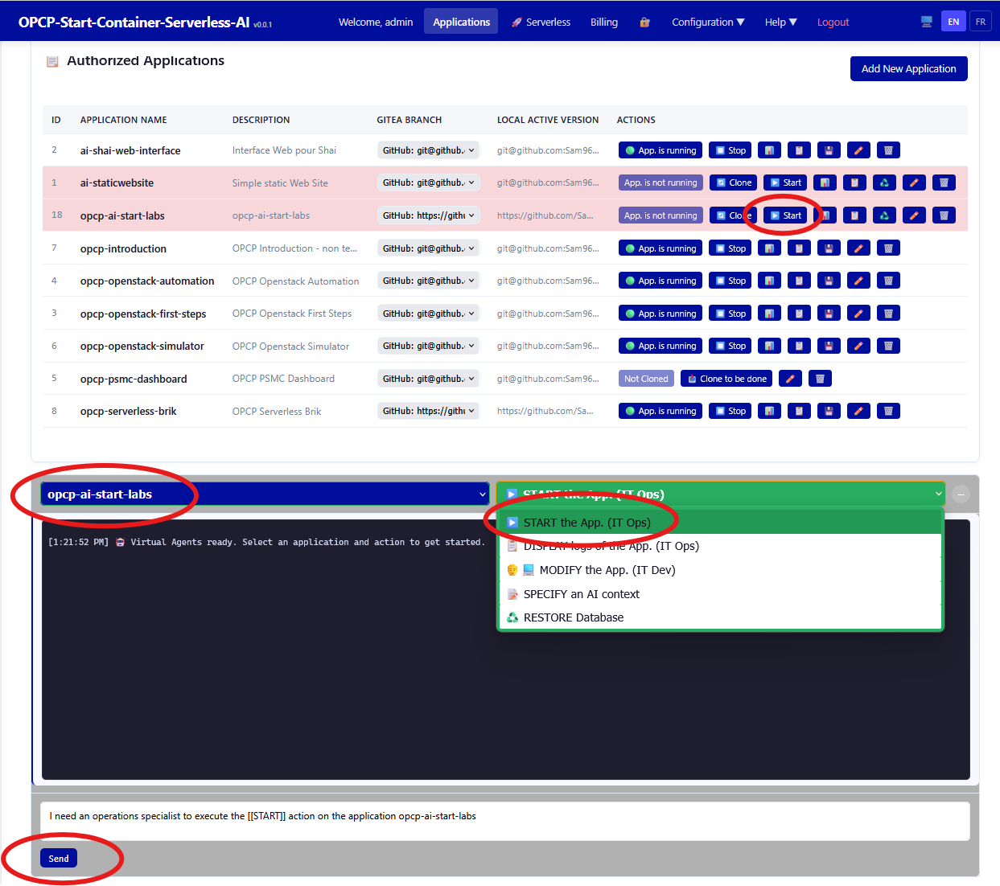

Démarrage des applications
Apprenez à démarrer les applications enregistrées sur la plateforme AI-Powered-Store, gérer leur cycle de vie et vérifier leur bon fonctionnement.
Prérequis
- Terminé : Installation sur Ubuntu Bare-Metal
- Terminé : Ajout de nouvelles applications
- Instance AI-Powered-Store en fonctionnement
Ce que vous apprendrez
- Démarrage des applications avec
deployApp.sh - Compréhension de l'orchestration des conteneurs Docker
- Surveillance des logs de démarrage
- Vérification de la santé et de la connectivité des applications
- Résolution des problèmes de démarrage courants
Démarrer une application

Utilisez le script de déploiement pour démarrer une application enregistrée :
# Naviguer vers le répertoire de la plateforme
cd ~/opcp-ai-powered-store
# Démarrer une application
./deployApp.sh <nom_app>Vérifier le statut d'une application
Vérifiez l'état des conteneurs en cours d'exécution :
# Lister les conteneurs actifs
docker ps
# Consulter les logs d'une application spécifique
docker logs <nom_conteneur> --tail 50
Labo disponible : Un module de laboratoire pratique accompagne cette leçon. Lancez le labo pour vous exercer dans un environnement isolé.